Modificador orgânico
Energia vital
para o desempenho.
Equilíbrio natural para resistência e resultado do rebanho, em todas as fases do ciclo produtivo.
Oito espécies · Todas as fases do ciclo
Conhecer o Dynamis
Laboratório homeopático veterinário · desde 2009
Medicamentos homeopáticos veterinários livres de resíduos. Fortalecem a imunidade e o desempenho do rebanho respeitando o animal, as pessoas e o meio ambiente.
Reg. MAPA · Uso veterinário
Descoberta por espécie
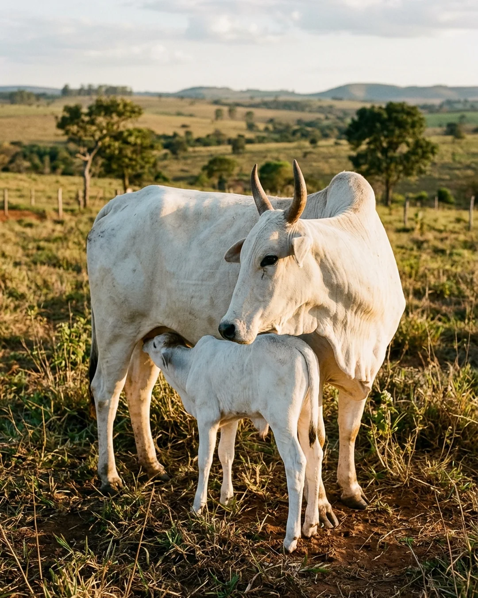
Bovinos 41 produtos · corte, leite e 1ª fase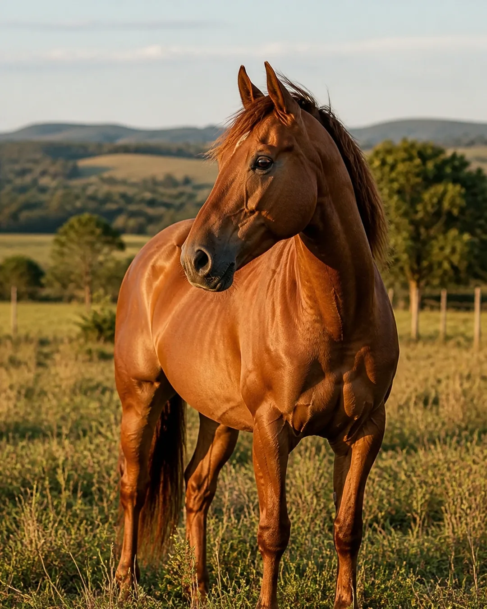
Equinos17 produtos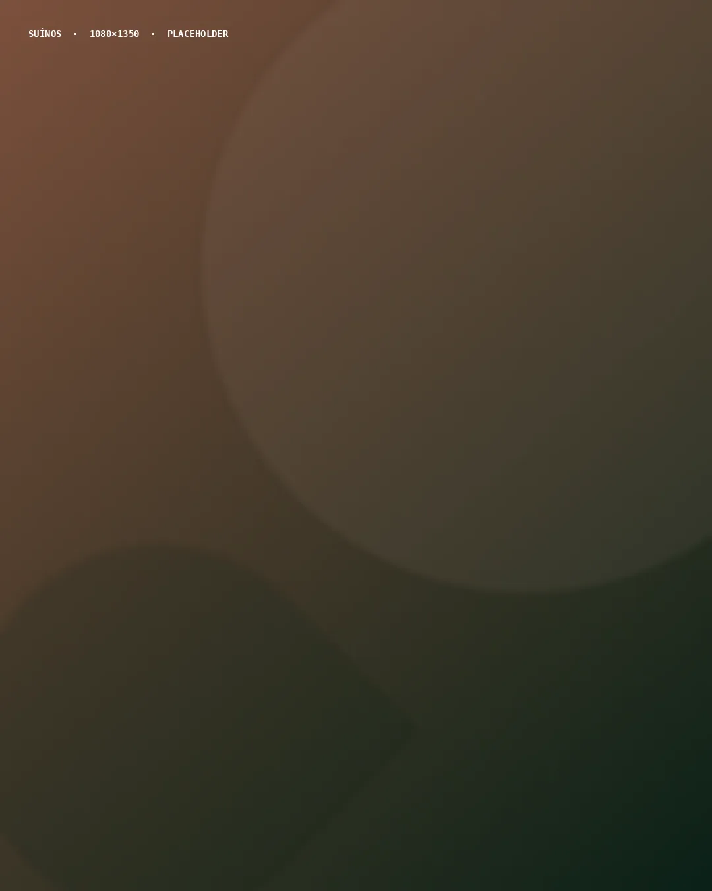
Suínos14 produtos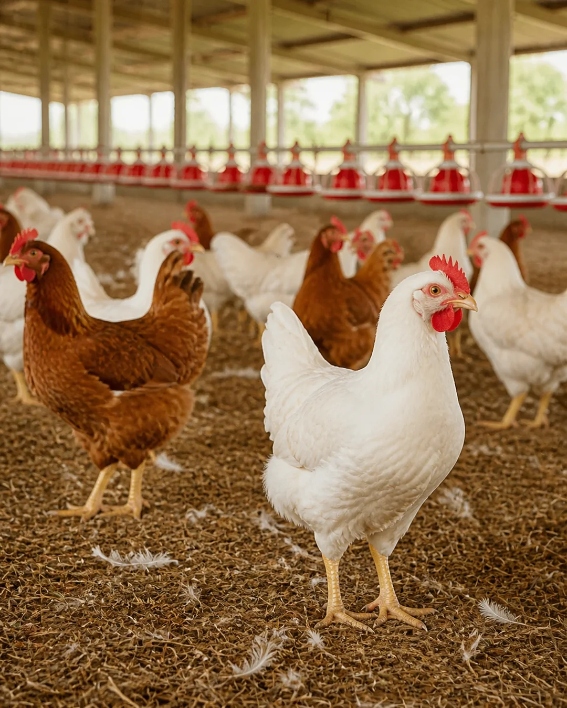
Aves15 produtos · corte e postura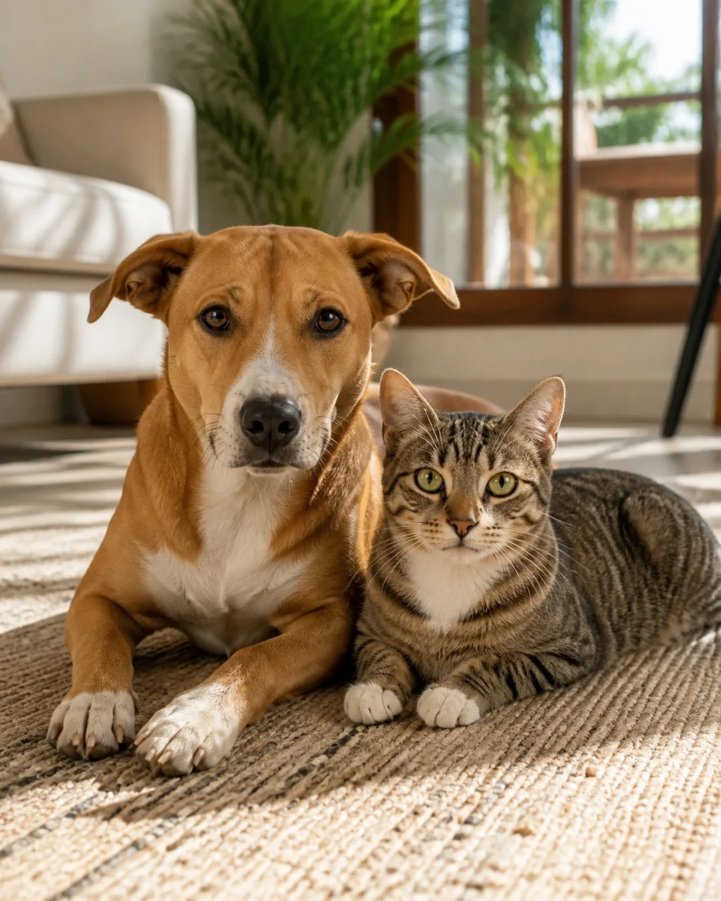
Pet20 produtos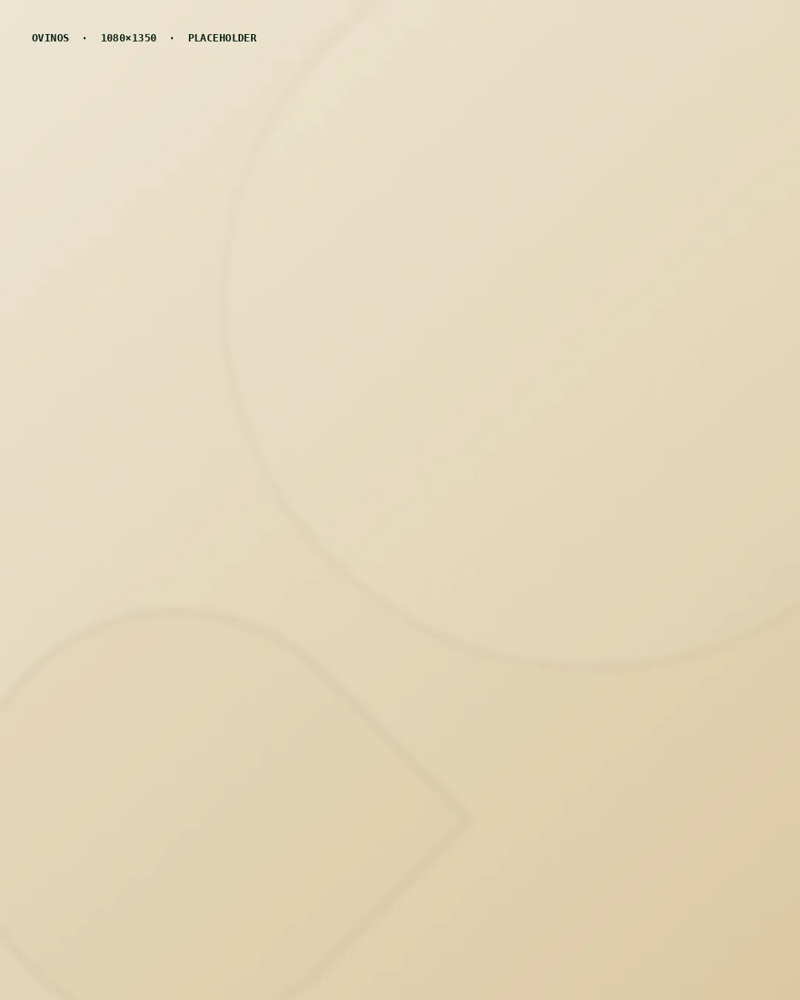
Ovinos16 produtos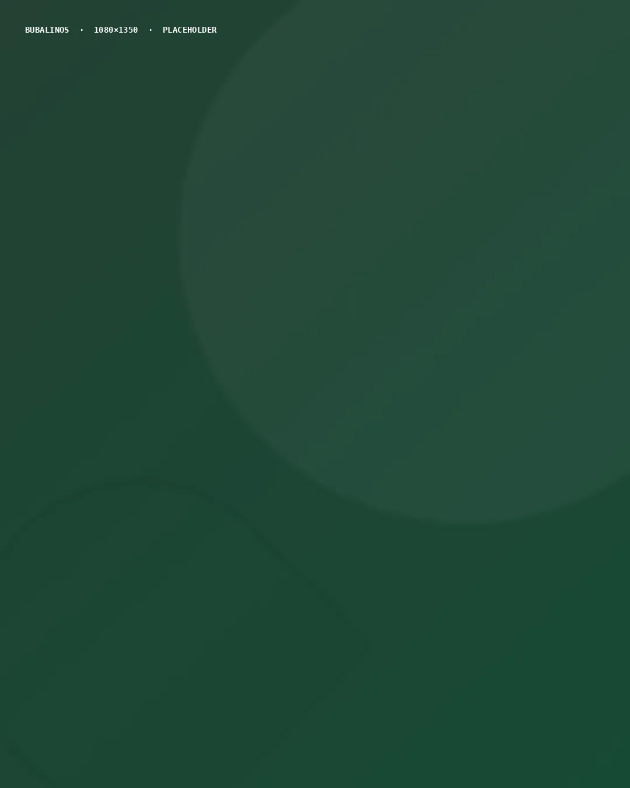
Bubalinos18 produtos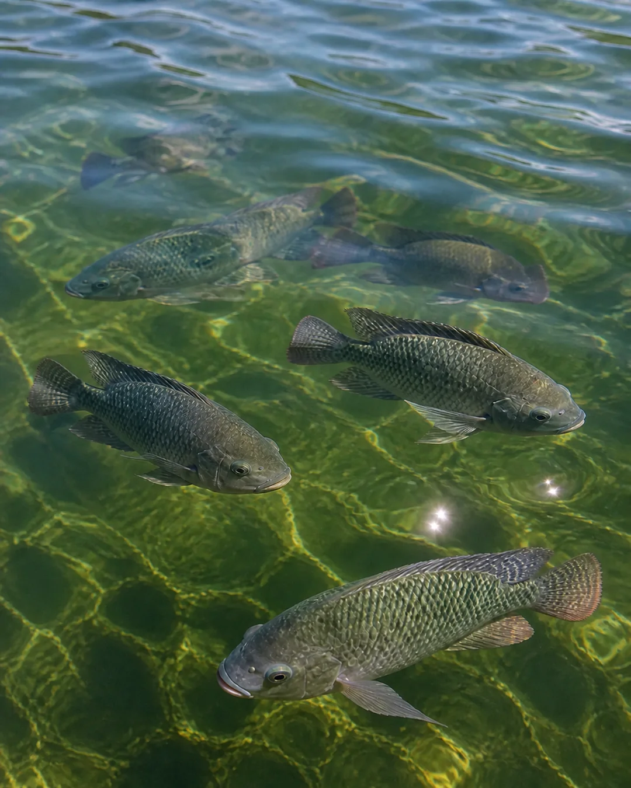
Peixes8 produtosCampanhas em destaque
Modificador orgânico
Equilíbrio natural para resistência e resultado do rebanho, em todas as fases do ciclo produtivo.
Oito espécies · Todas as fases do ciclo
Conhecer o Dynamis
Primeira fase
Força, proteção e desenvolvimento para o bezerro, quando cada dia decide o desempenho do animal adulto.
Seis espécies · Primeira fase
Conhecer o Máximo Baby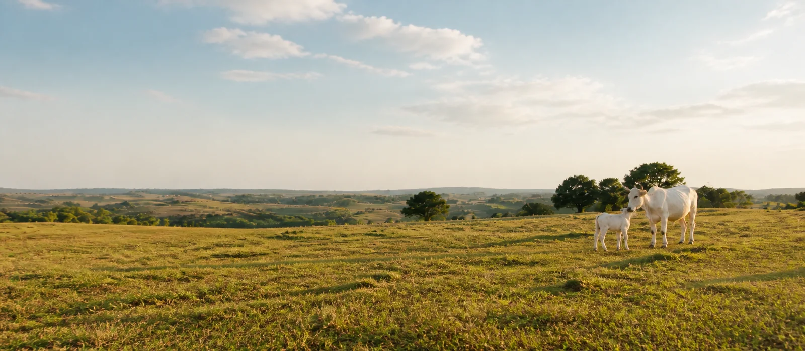

Saúde digestiva
Controle das diarreias com equilíbrio natural e carência zero, para o rebanho seguir o ciclo sem interrupção.
Seis espécies · Cria, recria e leite
Conhecer o Enthérikos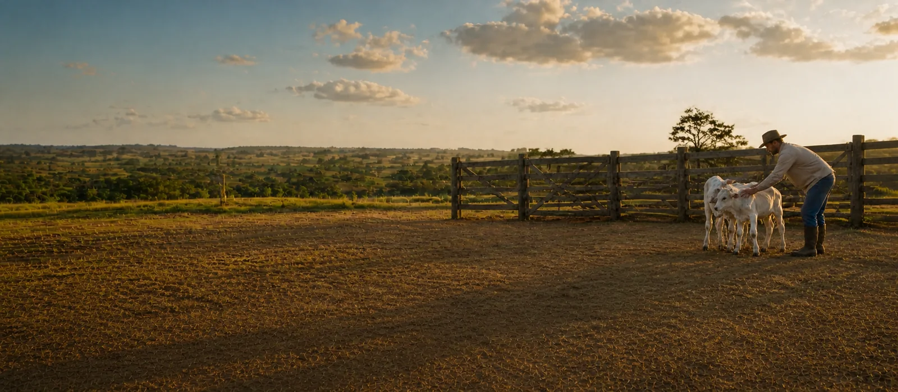

Produtos em destaque

Endecthon HP1000
Solução multiespécie cobrindo bovinos, bubalinos, caprinos, equinos, ovinos e suínos.
Ver produto
Hepathor H1000
Eficácia e proteção hepática para as principais espécies de produção.
Ver produto
Curae HC1000
Ampla cobertura veterinária, das aves de corte aos pets.
Ver produtoA empresa
A Hágil nasceu em 2009, em Teófilo Otoni, com uma convicção: levar ao mercado produtos não tóxicos e livres de resíduos, que não agridem o animal, as pessoas nem o meio ambiente — e ainda fortalecem a imunidade e a nutrição do rebanho.
Primeiro laboratório homeopático veterinário registrado no MAPA, reúne especialistas dedicados à criação, ao desenvolvimento e à produção de cada fórmula. E vai além da venda: seus distribuidores prestam assistência técnica ao produtor, de acordo com a necessidade de cada propriedade.
Desenvolver, produzir e comercializar medicamentos homeopáticos de qualidade, altamente eficazes para a saúde animal, gerando resultados que satisfaçam às necessidades dos clientes.
Manter-se como empresa de referência em soluções práticas e sustentáveis aos produtores e técnicos do agronegócio.
Escopo: projeto, desenvolvimento e produção de produtos veterinários homeopáticos em Teófilo Otoni, Minas Gerais; comercialização e prestação de assistência técnica em todo o território nacional.
Ciência e diferenciais
Produtos não tóxicos, sem carência e sem resíduos nos alimentos.
Produção com rigor técnico e controle de qualidade em cada lote.
Especialistas dedicados à criação e ao desenvolvimento de cada fórmula.
Desenvolvimento contínuo, orientado por resultados práticos no campo.
Sistema de gestão integrada certificado ISO 9001 e ISO 14001.
Respeito ao animal, às pessoas e ao meio ambiente em todo o ciclo.
Conhecimento
O conteúdo técnico da Hágil, editado para leitura.
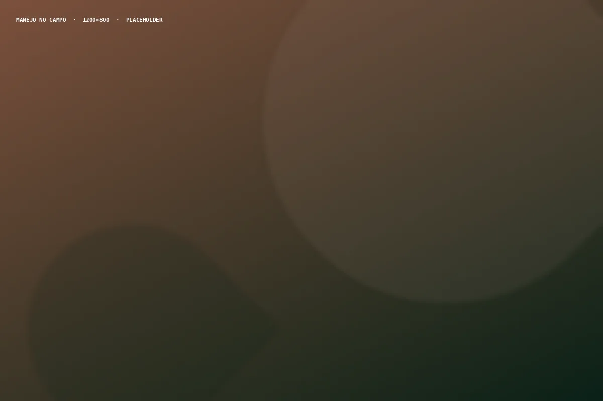
Informativo · Nº 82 Senepol da Grama Endecthon e Ecthon Pour-On no controle de parasitas externos: a experiência de manejo com o rebanho Senepol. Ler o informativoPonto representativo da área de cobertura
Rede nacional
Presente nas cinco regiões do Brasil, a rede Hágil vai além da venda: cada distribuidor presta assistência técnica de acordo com a necessidade da sua propriedade.
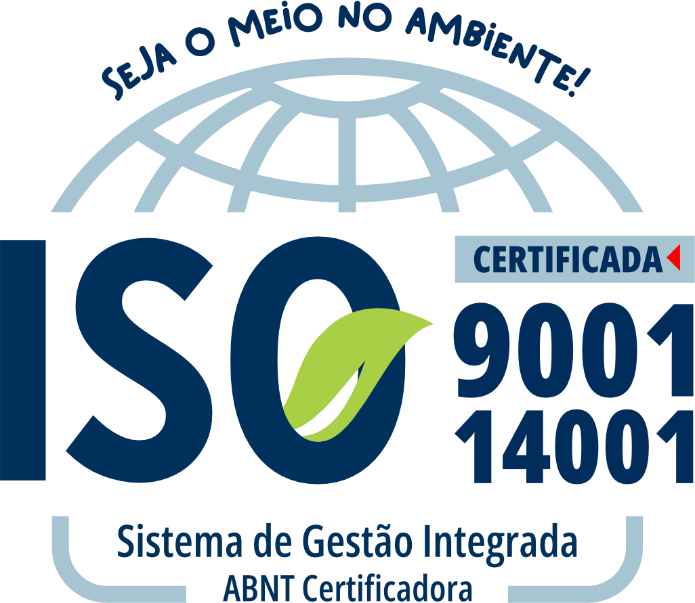
Gestão da qualidade e gestão ambiental auditadas, do desenvolvimento à entrega.
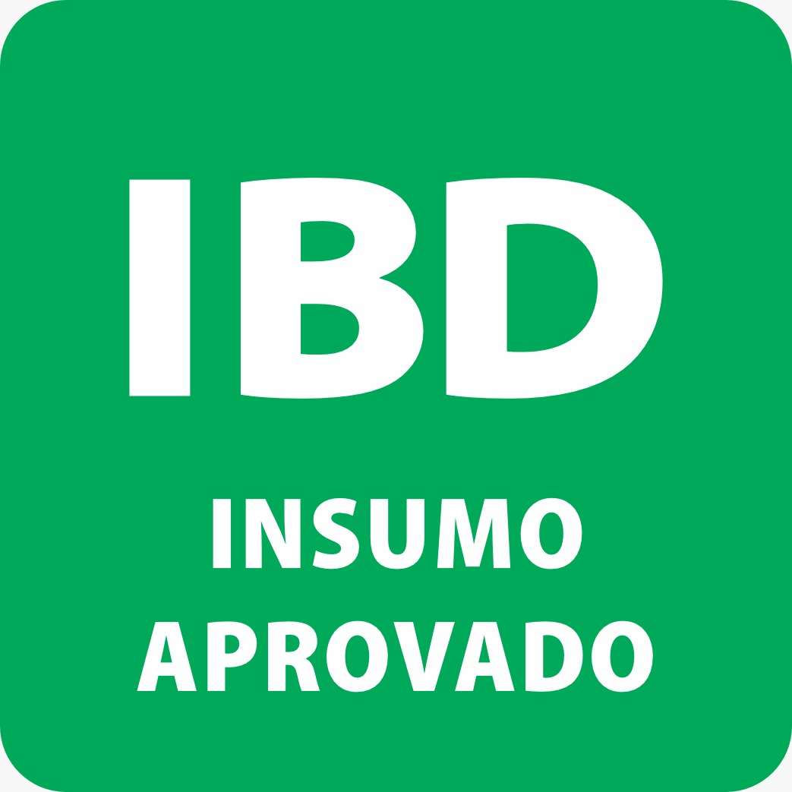
Certificação da maior certificadora de produtos orgânicos da América Latina.
Ministério da Agricultura, Pecuária e Abastecimento. Uso veterinário.
Catálogo completo
Da reprodução à imunidade, da digestão ao equilíbrio metabólico, para aves, bovinos, bubalinos, caprinos, equinos, ovinos, peixes, pets e suínos.
Visualizar catálogo completo